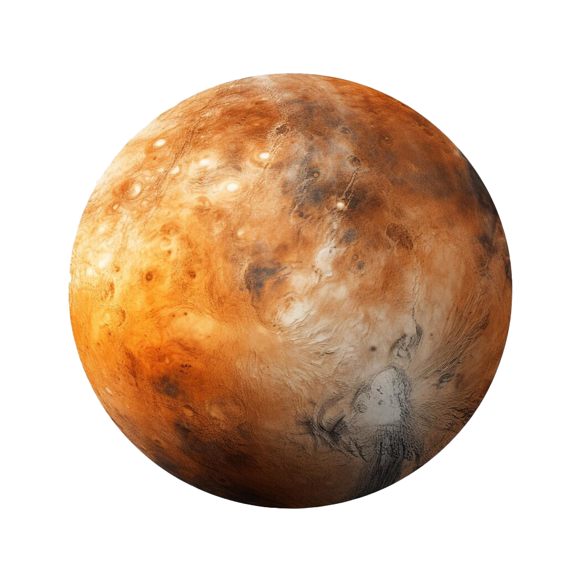
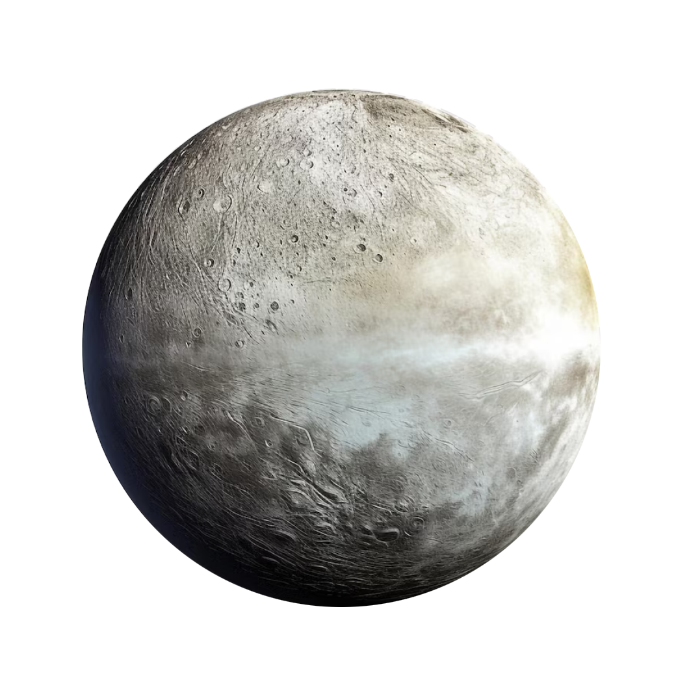
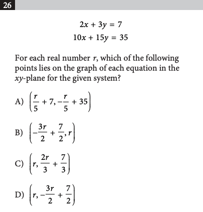

Case Study · 2024 — 2025 · Growth · Web · AI EdTech
From a one-function search tool to 30K math learners.
Founding Product Designer at Lucens AI. Redesigned MathSolver from the ground up and shipped 4 new features — grew to 30K registered users in ~1 year.
mathsolver.top


1000
Solver Mode
Tutor Mode
Checker Mode
|Input your question in text here
Solve this question step by step

Example